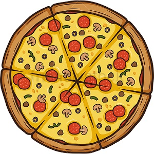
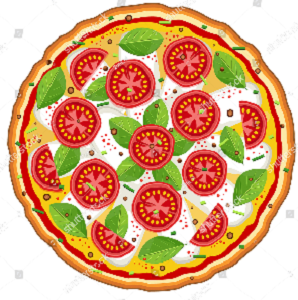
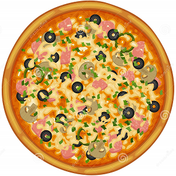
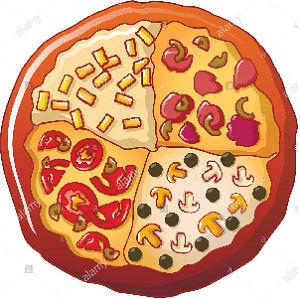
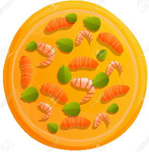
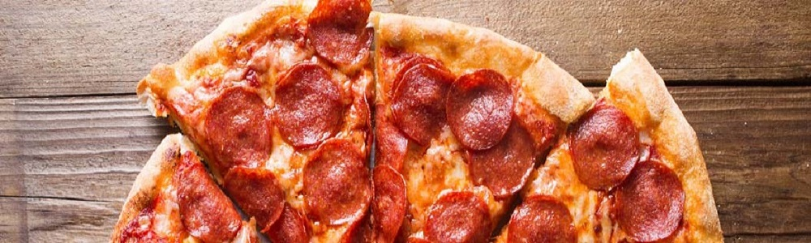
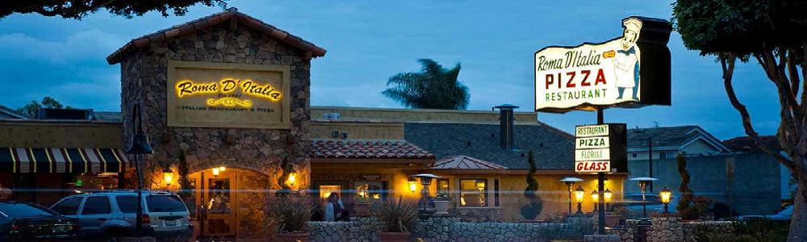

PICCERIJA U GRADU
MENU





Pepperoni
Pepperoni is an American variety of salami, made from a cured mixture of pork and beef seasoned with paprika or other chili pepper. Pepperoni is characteristically soft, slightly smoky, and bright red in color. Thinly sliced pepperoni is a popular pizza topping in American pizzerias.
2$ 6$ 12$
Margherita
Tastes like fresh mozzarella. Sauce is sweet and tangy, more of a marinara/pasta sauce flavor. Crust is great and has those Neapolitan-esque burnt bubbles. Chewy but manageable
1.5$ 5$ 10$
Capricciosa
Capricciosa is made with an ever-changing combination of ingredients which most often include tomatoes, mozzarella, mushrooms, artichokes, ham, olives, and a sliced hard-boiled egg.
3$ 7$ 13$
Quatro Stagione
Represents the four seasons and the ingredients that are known in Italy for those seasons. A beautiful way to pay homage to a food passionate culture dedicated to the freshness as a result in a most incredible textural and flavorful experience!
4$ 8$ 16$
Shrimps
Dry Yeast, Iodized Salt, Sugar, Rice Flour, Wheat Flour, Diacetyl Tartaric Acid Esters of Mono and Diglycerides, monoglycerides and diglycerides, soybean oil, sodium stearoyl-lactate, wheat gluten, enzymes and ascorbic acid.
5$ 10$ 19$
Contact
Mail Address:
Address:
About Us
How it's made?
Caputo flour is the base for our low-salt dough, slow-fermented over 36 hours. It puffs up quickly when hitting 400°C in our neapolitan made wood oven: the intense heat chars the pizza base shaping a crisp cornicione, giving it a pleasant look and outstanding taste.
Genuine Neapolitan taste
Toppings are well balanced to create a glorious and mouth-watering taste: hand-crushed tomato sauce, the right amount of scattered fior di latte (cow) mozzarella and plenty of choice should you fancy more on your pizza. You sit and enjoy, we do the rest!
 